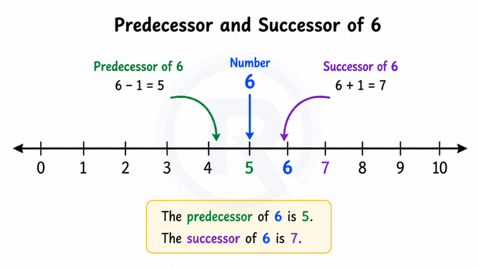
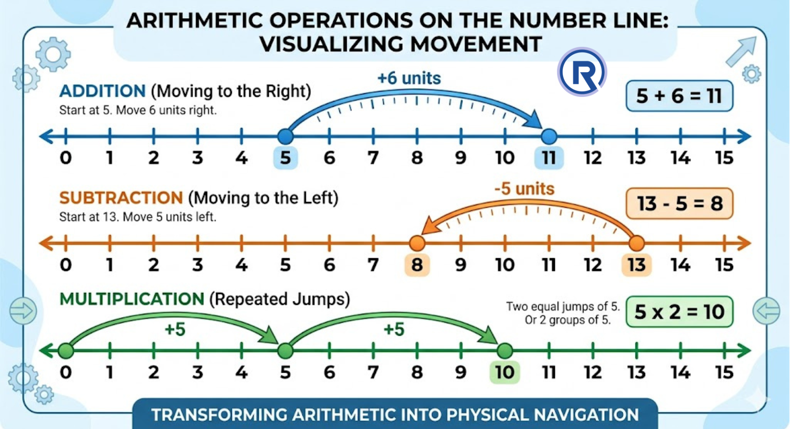

Part 4: Whole Numbers
Class 6 · Chapter 1 · Patterns in Mathematics
1. Big Picture Overview
The Number Line, Predecessor, Successor, and Operations
You have been using counting numbers — 1, 2, 3, 4, ... — for as long as you can remember. But have you ever thought about what happens before 1? Is there a number that fits there? And what exactly is a "number" in a mathematical sense?
This section introduces whole numbers — a small but conceptually significant expansion of the counting numbers. By adding zero to the collection, we get a set of numbers with a cleaner, more complete structure.
More importantly, this section introduces the number line — one of the most powerful tools in all of mathematics. The number line allows you to see numbers spatially, to visualise operations as movement, and to understand relationships between numbers that are difficult to grasp from digits alone.
The ideas here are foundational. Every number system you will study in the future — fractions, negative numbers, decimals — will be built on or compared against this foundation.
Whole numbers are a small but conceptually important expansion of counting numbers. Zero gives the collection a definite starting point, predecessor and successor describe immediate neighbours, and the number line turns arithmetic into a spatial structure that you can see and use.
2. Core Concepts
Concept 1 — From Counting Numbers to Whole Numbers
a. Intuitive Explanation
When you count objects, you start at 1. There is no "zero objects" in casual counting — you count what is there. So counting numbers are 1, 2, 3, 4, ...
But mathematics needs to represent absence as well as presence. If a box has no apples, the count is 0. Zero is not "nothing" in the philosophical sense — it is a specific, definite quantity: the quantity that represents the state of having none of something.
When we include 0 in our collection of counting numbers, we get the whole numbers: 0, 1, 2, 3, 4, ...
b. Formal Idea
Natural numbers (also called counting numbers) are the numbers we use to count: 1, 2, 3, 4, ...
Whole numbers are natural numbers together with zero: 0, 1, 2, 3, 4, ...
Every natural number is also a whole number. But 0 is a whole number that is not a natural number.
c. Deep Explanation
Why does this distinction matter if it is just one extra number (zero)?
Because zero changes the structure of the collection significantly. With natural numbers, every number has a predecessor (the number before it) — except there is a gap at the beginning. The number 1 has no predecessor in the natural numbers. With whole numbers, 1's predecessor is 0, and the collection has a definite starting point.
d. Common Misconceptions
Misconception: "Zero means nothing, so it's not really a number — it's just a placeholder."
Why it feels correct: We often say "zero" to mean "nothing at all."
Why it is incorrect: Zero is a fully defined number with its own mathematical properties. It has a specific position on the number line. It behaves in defined ways under addition and multiplication. It is a meaningful mathematical object, not an absence of meaning.
Misconception: "Natural numbers and whole numbers are the same thing."
Why it is incorrect: They differ by exactly one element — zero. Natural numbers are {1, 2, 3, ...} and whole numbers are {0, 1, 2, 3, ...}. This distinction becomes important in higher mathematics.
Concept 2 — Predecessor and Successor
a. Intuitive Explanation
In any ordered sequence, each element has a neighbour on either side (unless it is at the very start or end). In whole numbers, the neighbour just before a number is called its predecessor, and the neighbour just after is called its successor.
b. Formal Idea
The successor of any whole number is obtained by adding 1 to it. Every whole number has a successor.
The predecessor of any whole number is obtained by subtracting 1 from it. Every whole number except 0 has a predecessor within the whole numbers.
c. Deep Explanation
The concept of successor is actually one of the deepest ideas in all of mathematics. The idea that you can always add 1 to any number and get the next one is what guarantees the counting numbers go on forever — there is no "largest" number, because any number's successor is always one more.
Why does 0 have no predecessor in whole numbers? Because 0 − 1 = −1, and −1 is not a whole number. The whole numbers begin at 0 — there is nothing before it in this collection. (Negative numbers, which you will study later, extend the number line in the other direction — but that is a separate story.)
Predecessor and successor are not just mechanical operations. They express the idea of immediate neighbourhood in the number sequence — the numbers immediately adjacent to a given number with no whole number between them.
d. Common Misconceptions
Misconception: "The predecessor of 0 is 0 itself, because there's nothing before 0."
Why it is incorrect: 0 simply has no predecessor in the whole number system. It is the first (smallest) whole number. Saying its predecessor is itself would be mathematically nonsensical.
e. Visual Support

Concept 3 — The Number Line
a. Intuitive Explanation
A number line is a straight line on which every whole number corresponds to a specific point — equally spaced. It is a spatial representation of number — it turns an abstract concept into something you can see and measure.
b. Formal Idea
To draw a number line:
- Draw a straight horizontal line.
- Mark a point and label it 0.
- Mark another point to the right of 0 and label it 1. The distance between 0 and 1 becomes the unit distance.
- Continue marking points at equal intervals to the right: 2, 3, 4, and so on.
Numbers increase as you move to the right, and decrease as you move to the left.
c. Deep Explanation
The number line does something remarkable: it gives numbers spatial identity. Every number lives at exactly one point, and every point corresponds to exactly one number. This one-to-one relationship means the number line is a complete, unambiguous representation of the whole numbers.
Why equal spacing matters: The consistent unit distance ensures that the visual distance between any two numbers reflects their numerical difference. The distance from 3 to 7 looks the same as the distance from 8 to 12 — and both differences are indeed 4. This visual honesty is what makes the number line trustworthy.
Operations as movement: The number line transforms arithmetic from symbolic manipulation into physical movement:
- Addition means moving to the right (increasing).
- Subtraction means moving to the left (decreasing).
- Multiplication means making equal jumps of a fixed size.
This is a profound insight: arithmetic operations have geometric meaning. You are not just manipulating symbols — you are navigating a spatial structure.

d. Common Misconceptions
Misconception: "The number line ends at whatever number I draw last."
Why it is incorrect: The number line extends infinitely in both directions. What you draw on paper is only a portion of the number line — an illustration of part of an infinite structure. An arrow at the end of the line (a convention in diagrams) signals that it continues without end.
Misconception: "Moving left on the number line means going to 'smaller' numbers, but small is not really less important."
Clarification: In mathematical context, moving left means moving toward numerically smaller values — which have less quantity. This is not about importance; it is about the ordering of quantities. The number line encodes order spatially and consistently.
e. Conceptual Connections
The number line makes the predecessor/successor concept visual: the predecessor is always the point one step to the left, and the successor is always the point one step to the right.
The number line also connects to the concept of the whole numbers being an infinite, ordered set — the line goes on forever to the right, with no end.
3. Important Distinctions
| Feature | Natural Numbers | Whole Numbers |
|---|---|---|
| Starting number | 1 | 0 |
| Includes zero? | No | Yes |
| Every number has a predecessor? | No (1 has none) | No (0 has none) |
| Every number has a successor? | Yes | Yes |
| Operation on Number Line | Direction of Movement |
|---|---|
| Addition | Right (increasing) |
| Subtraction | Left (decreasing) |
| Multiplication | Repeated equal jumps to the right |
4. Concept Checkpoints
- Why does every whole number have a successor but not every whole number has a predecessor? What does this asymmetry tell you about the structure of the whole number collection?
- On a number line, two points are 7 units apart. How many different pairs of whole numbers can satisfy this? What does your answer say about the number line's structure?
- If you add 1 to any whole number, you always get a larger whole number. Does this mean the set of whole numbers "grows" — or does it always stay the same collection? Think carefully about what this question is really asking.
- Can you perform multiplication on the number line without knowing the times tables? What does the number line method reveal about what multiplication actually means?
5. Chapter-Level Mental Model
Whole numbers are the most fundamental structure in school mathematics. They are not just a list of symbols — they are an ordered, infinite collection with a clear start (zero), consistent neighbours (predecessor/successor), and a spatial representation (number line) that makes their relationships visible.
The number line is the conceptual bridge between arithmetic (numerical operations) and geometry (spatial relationships). It is one of the most important tools you will use — not just in this section, but throughout your mathematical education.
The skill this section develops is mathematical intuition about number — the ability to see numbers not just as calculation tools, but as objects that live in a structured, spatial universe.
End of Part 4 of 6: Continue to Part 5: Patterns in Mathematics — Number Sequences
▶ Number Sequences